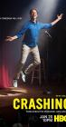

What is this site?
Stephen's Profile
Browser Extension
Stephen Klancher
Recent
Overall
Year Overview
Series
Lists
Crashing
List contains: 24 items, 0.4 hours.
Seasons:
1
|
2
|
3
|
Title Search (4+ characters):
Group:
None
Example Group: Me and Stephen
Who's seen it:
No filter
Everyone
No One
Anyone
Anyone Has Not
Who's commented:
No filter
Everyone
No One
Anyone
Anyone Has Not
Netflix:
No Filter
Available for Instant Watch
Netflix Link Known
Netflix Link Unknown
Missing Data:
No Filter
Runtime
Season
Release Year (YYYY) or Decade (YYYx):
Sort:
Normal
Newest Episodes First
Episodes in Order
Recently Watched First
Watched in Order
Newest Releases First
Releases in Order
Stephen Klancher
...has seen 0
...has not seen 0.4 hours
Timeline

Season 1
Artie Lange
Airs on 2017-02-19
S1 - E1 of
Crashing
Stephen Klancher
:
The Road
Airs on 2017-02-26
S1 - E2 of
Crashing
Stephen Klancher
:
Yard Sale
Airs on 2017-03-05
S1 - E3 of
Crashing
Stephen Klancher
:
Barking
Airs on 2017-03-12
S1 - E4 of
Crashing
Stephen Klancher
:
Parents
Airs on 2017-03-19
S1 - E5 of
Crashing
Stephen Klancher
:
Warm-Up
Airs on 2017-03-26
S1 - E6 of
Crashing
Stephen Klancher
:
Julie
Airs on 2017-04-02
S1 - E7 of
Crashing
Stephen Klancher
:
The Baptism
Airs on 2017-04-09
S1 - E8 of
Crashing
Stephen Klancher
:
Season 2
The Atheist
Airs on 2018-01-14
S2 - E1 of
Crashing
Stephen Klancher
:
Pete and Leif
Airs on 2018-01-21
S2 - E2 of
Crashing
Stephen Klancher
:
Bill Burr
Airs on 2018-01-28
S2 - E3 of
Crashing
Stephen Klancher
:
Porter Got HBO
Airs on 2018-02-04
S2 - E4 of
Crashing
Stephen Klancher
:
Too Good
Airs on 2018-02-11
S2 - E5 of
Crashing
Stephen Klancher
:
Artie
Airs on 2018-02-18
S2 - E6 of
Crashing
Stephen Klancher
:
NACA
Airs on 2018-02-25
S2 - E7 of
Crashing
Stephen Klancher
:
Roast Battle
Airs on 2018-03-04
S2 - E8 of
Crashing
Stephen Klancher
:
Season 3
Jaboukie (2019)
Airs on 2019-01-20
S3 - E1 of
Crashing
Stephen Klancher
:
The Temple Gig
Airs on 2019-01-27
S3 - E2 of
Crashing
Stephen Klancher
:
The Secret
Airs on 2019-02-03
S3 - E3 of
Crashing
Stephen Klancher
:
MC, Middle, Headliner
Airs on 2019-02-10
S3 - E4 of
Crashing
Stephen Klancher
:
Mom and Kat
Airs on 2019-02-17
S3 - E5 of
Crashing
Stephen Klancher
:
The Viewing Party
Airs on 2019-02-24
S3 - E6 of
Crashing
Stephen Klancher
:
The Christian Tour
Airs on 2019-03-03
S3 - E7 of
Crashing
Stephen Klancher
:
Mulaney
Airs on 2019-03-10
S3 - E8 of
Crashing
Stephen Klancher
:
Watched an episode not known by IMDb?
Season:
-
Episode:
Date:
Comment: